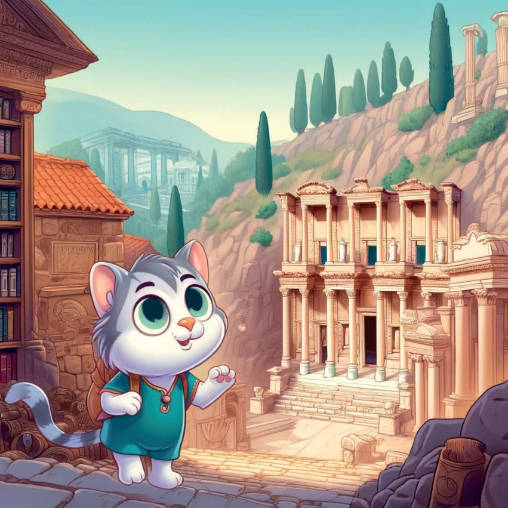
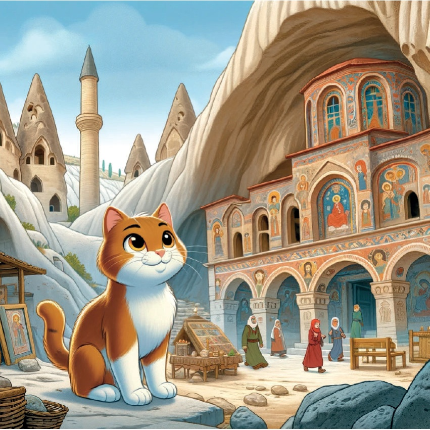
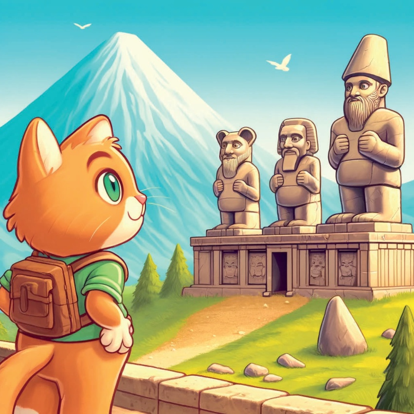
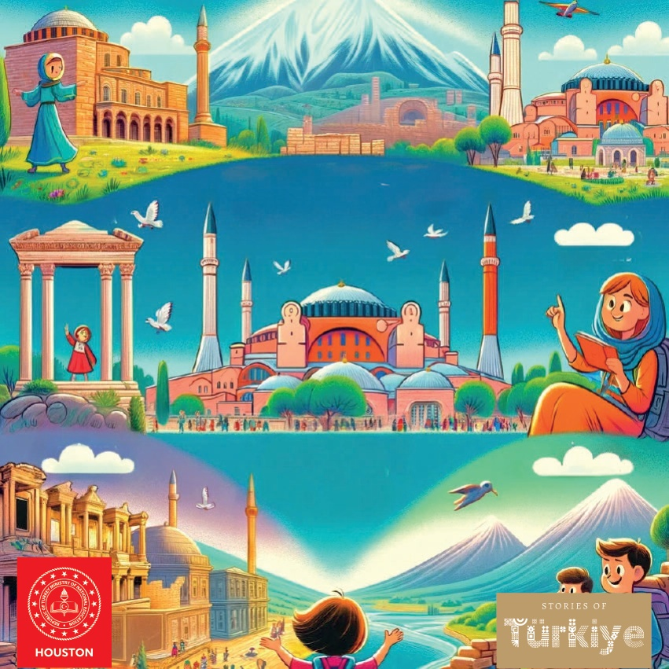

1

2

3
Der var engang en nysgerrig lille kat ved navn Karamel, som elskede at udforske historiske steder. Karamel tog afsted på en rejse gennem Tyrkiet for at opdage landets smukke historiske seværdigheder og bygninger.
4
5
Marmara-regionen - Istanbul: Hagia Sophia Karamel’s første stop var i Istanbul, hvor hun besøgte den storslåede Hagia Sophia. Hun var imponeret over den store kuppel og de smukke mosaikker og lærte om dens historie som både en kirke og en moske.
6
7
Aegean Region - Izmir: Ephesus Næste gang rejste Karamel til Izmir for at besøge den gamle by Ephesus. Hun udforskede det store bibliotek, Celsus Bibliotek, og det store teater og forestillede sig det travle liv i denne gamle by.
8

9
## Aspendos Teatret - Antalya.
I Antalya besøgte Karamel det gamle teater i Aspendos. Hun var meget imponeret over, hvor godt teateret var bevaret, og hun forestillede sig alle de forestillinger, der engang fandt sted derinde.
10
11
Central Anatolien - Cappadocia: Göreme Friluftsmuseum.
I Cappadocia besøgte Karamel Göreme Friluftsmuseum. Hun gik rundt mellem de kirker og klostre, der er hugget ud af klippen, og var forbløffet over de gamle fresker.
12

13
Karamel fra Sortehavsregionen – Trabzon: Hun rejste til Trabzon, hvor hun besøgte Sumela Manastiren. Manastiren ligger højt oppe på en klippe. Hun var meget imponeret over de fantastiske udsigter og de fine detaljer i manastiren.
14
15
Doğu Anadolu - Ani Kalıntıları.
I Doğu Anadolu'da Karamel, eski bir şehir olan Ani'yi ziyaret etti. Ani, "1001 Kilise Şehri" olarak bilinir. Karamel kalıntıları keşfetti ve şehrin tarihi önemi hakkında bilgi aldı.
16
17
Doğu Anadolu Bölgesi - Karamel, son mola olarak Nemrut Dağı'na geldi. Burada devasa heykelleri ve Kral Antiochus I'in eski mezarını keşfetti. Mekanın ihtişamına çok hayran kaldı.
18

19
Med hjertet fyldt af ærefrygt og tankerne fyldt med historie, indså Karamel, at Tyrkiets sande skatte var dets storslåede seværdigheder og de historier, de fortalte. Hun gik hjem og drømte om sit næste eventyr.
20
21

22